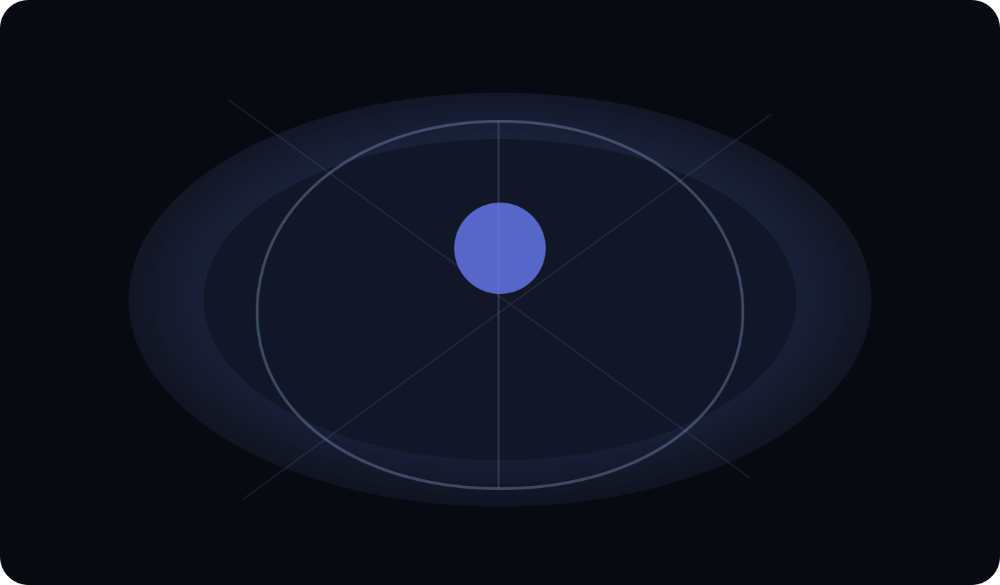
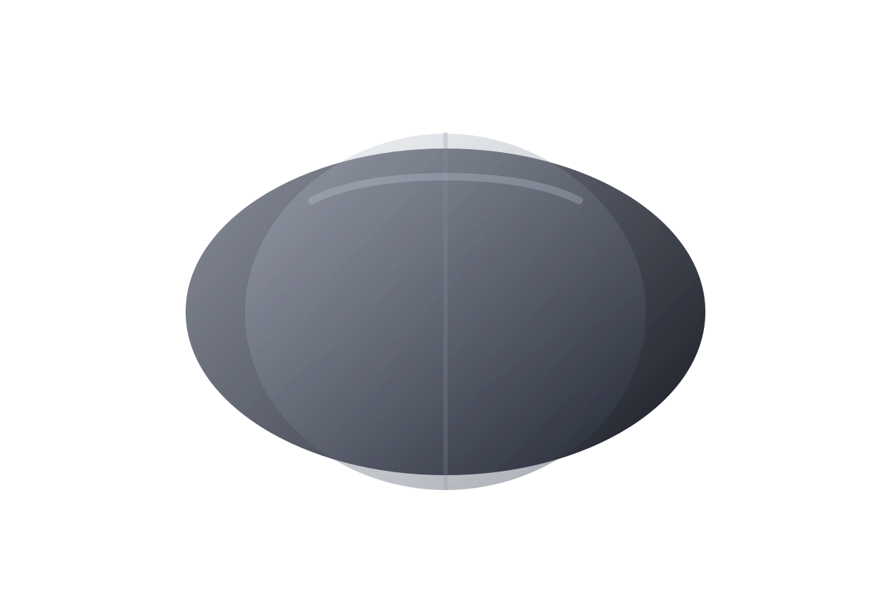
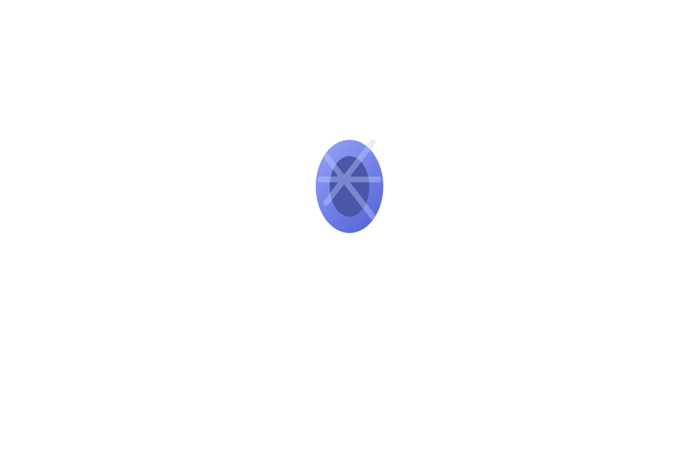
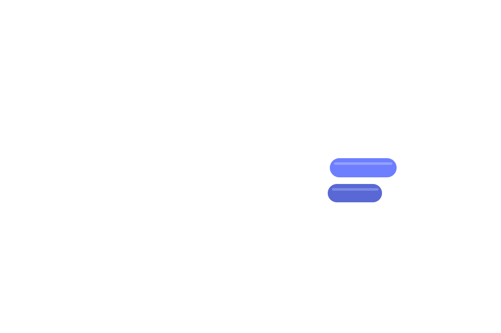
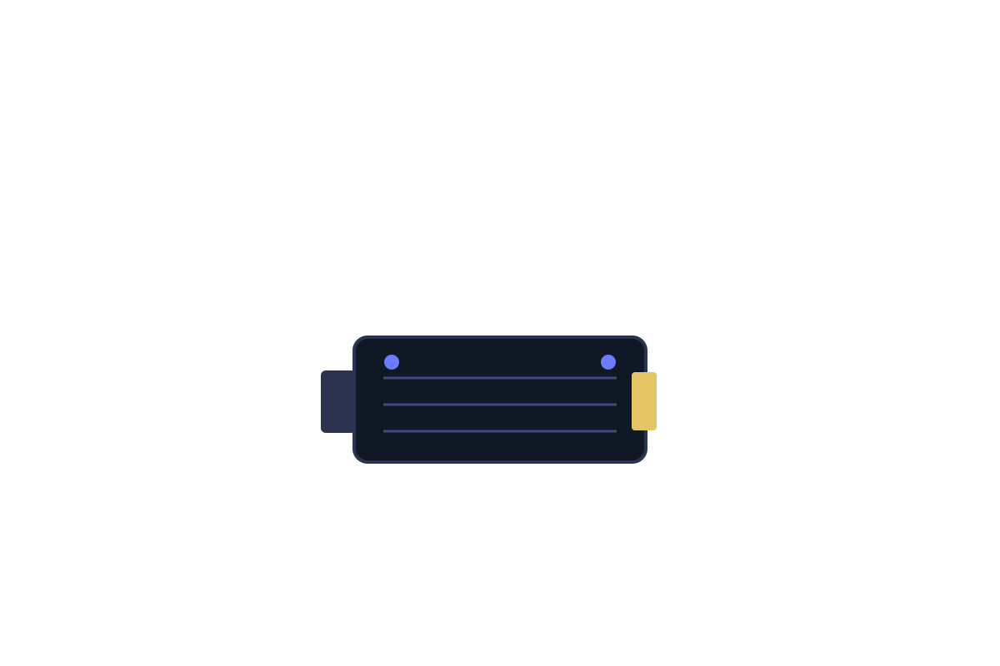
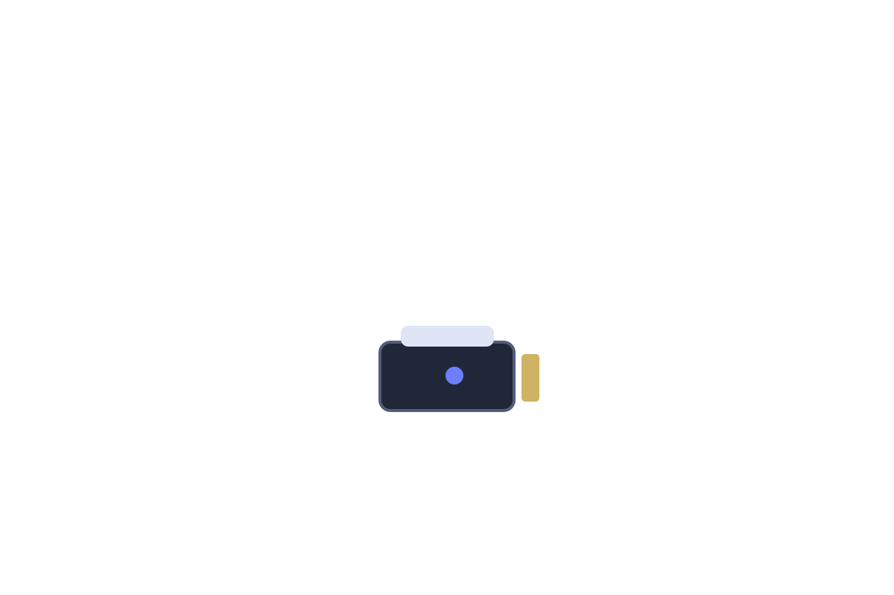
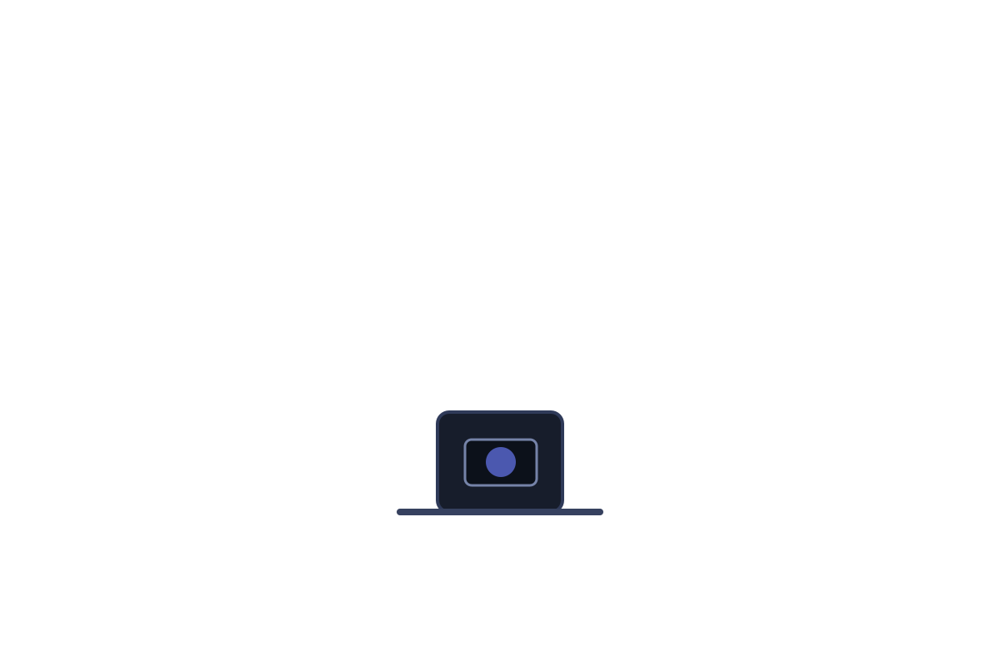
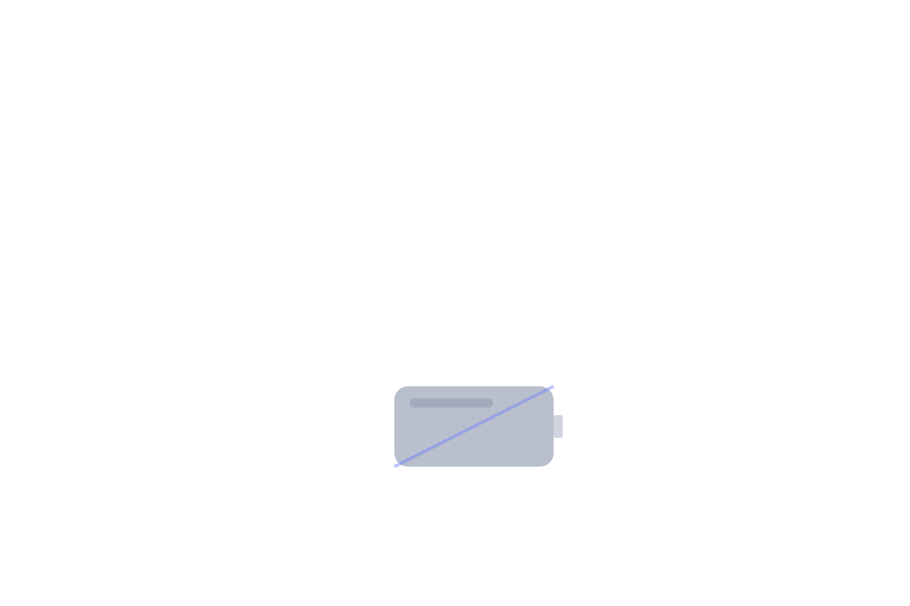

透明外殼 × 結構語言
半透明上蓋與深色下殼共同構成克制而高端的輪廓，讓內部機械美學若隱若現，延續經典人體工學弧線。
Exploded Engineering / G3 Series
以 Keychron G3 Ultra-Light Wireless Mouse 為靈感，打造一個從零件到整機的視差組裝體驗。








半透明上蓋與深色下殼共同構成克制而高端的輪廓，讓內部機械美學若隱若現，延續經典人體工學弧線。
高抓握紋理滾輪以低阻尼軸心結構提供細膩段落感，兼顧 FPS 快速切槍與日常精準滾動控制。
前後側鍵針對拇指自然落點校準，回彈路徑短、確認感明確，讓技能釋放與武器切換更俐落。
以高整合電路板承載核心運算與傳輸，2.4G 模式下可達 8K polling，將延遲壓縮至競技級區間。
左右鍵採用高壽命微動方案，觸發點穩定、聲學回饋乾淨，維持長時間對戰中的節奏一致性。
高階光學感測器提供高 DPI、低抖動追蹤與穩定 lift-off control，滿足低敏到高速甩槍的完整範圍。
緊湊電池模組與主板協同供電，在重量與續航間取得平衡，確保長時間無線對戰依然維持穩定輸出。
當最後一個零件歸位，速度、重量與手感形成完整閉環。